War of the (Social) Worlds
Aviva Blonder, Trang Escobar, Vincent Wong
INTRODUCTION
Schisms are a destructive and dramatic way for communities to break up. On the ground, the reasons might be personal or ideological. From a bird's eye view, people may choose sides based on the information available to them, the news they get, as well as their personal biases.
Consider the example of two major players in a community breaking up the community over a fight. Each person involved thinks they are right and cuts ties with the other. Ensuing accounts of what happened spreads through the community by word of mouth. The members of the community shift their views in response to the news. Each individual evaluates the news they receive and compares it to their own bias.
One strong example of such a schism is Zachary's karate club1, which is a popular social network that was recorded around the time (before and after) a schism. Social ties were recorded between members of a karate club. However, due to an event, there was a major fight between two leaders of the karate club, resulting in a split as members chose sides and cut ties with opposing members. Visualizations of this network imply interesting relationships that either persisted or were removed after the inciting event. This social network is often used as a benchmark for community detection algorithms, due to the clear and qualitatively supported data on the network's construction. For us, the network is an example of the dynamics that we hope to capture in a model.
In this project, we construct a model of a schism in a community that focuses on how beliefs and information transmission shape how a community polarizes. To do this, we construct social networks and propagate information through the networks starting from two feuding nodes and spreading to the rest of the population. Individuals integrate news about the feud with their pre-existing opinions and pass their biased perspective on to others.
The preliminary findings of this project show that the networks converge on a variety of equilibrium configurations. The community either ends up polarized in favor of one of the feuding nodes, or lands on a mixed equilibrium, where partial splits and intermediate opinions survive. We believe this demonstrates interesting social behaviors that could be explored further. Future work on this project will need to quantify and statistically validate the behaviors we observe in the system. It would also be important to explore the space of parameters, and the effects of network topology on the results.
MODEL
Primarily, we were concerned with the dynamics of information as it propagated on the network. In this section, we will describe the details of the model and the algorithm we created. First, we chose an example network topology using common network generating algorithms. Next, we initialized the people who would start the feud, as well as the initial views of all the other individuals. Then, we iteratively passed news about the feud through the network, where it interacted with individuals pre-existing views.
First, we constructed social networks of 100 individuals. To generate the network structure, we used one of two algorithms: Barabasi-Albert (m = 2) and random geometric network (r = 0.175). The former is used to generate a network with strong preferential attachment, whereas the latter generates a network with clusters in long, looping chains. Preferential attachment has some grounding in real social networks, whereas geometric networks do not, though in this case they produce interesting results.
Two central individuals are chosen as the seed nodes, who start the feud, with one assigned the "view" value of 0 and the other a "view" value of 1. The seeds' views never change over the course of the simulation. All other agents are given a random starting value uniformly distributed from (0,1), i.e. between 0 and 1 non-inclusive. Then, to ensure that the agents' initial positions are less erratic, we assign each non-seed node the mean of their neighbors' random assignments. However, in simulations it was not clear that this was a necessary step.
Each iteration, news about the feud travels through the network. First the seed nodes transmit their views to their neighbors, who use the news to adjust their own views, which they pass on to their own neighbors. In each iteration, each individual has one chance to share their views about the feud, starting with the seeds, followed by individuals that are directly connected to the seeds, and then the individuals that have one node between them and a seed, and so on. Individuals share their views with all of their neighbors, except for the seeds, regardless of whether that neighbor has already received the news from someone else, or was the individual who shared the news with them in the first place.
When an individual receives news, it compares the news — i.e. the senders views about the event — to their own pre-existing views. If they're too far apart — we used a cut-off of 0.5 — the receiver rejects the news and cuts ties with the sender, destroying the edge between them. If the news is similar enough to the individual's pre-existing views, the receiver uses the news to update their own views, in proportion with the distance between their views and the news, and how close the individual's pre-existing views are to 0.5, or neutral (Eqn. 1). The larger the distance between their views and the news, the smaller a proportion of that distance they'll add to their own view. Also, we assumed that individuals that are neutral with respect to the feud are less invested in it and therefore less likely to change. Likewise, the closer to 0.5 an individual's views are, the smaller a proportion of the distance they'll cover. This creates a high threshold for polarization, because individuals should be inclined to remain in the center. And sure enough, unless an individual is already highly polarized, the resulting landscape favors the center (Figure 1).
New views = current views + (1-|distance|)*distance*(|0.5-current views|+.01) (1)
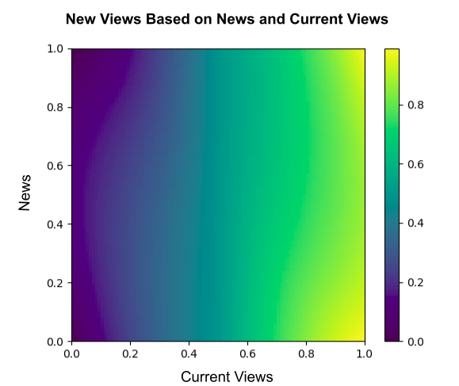
Figure 1: Heatmap of new views given news and current views.
RESULTS
We were unable to do any quantitative analyses of the results, but qualitatively based on visualizations of how individual's views change over time, we found that most runs initially converged on a moderate opinion (distributed around 0.5) and then diverged from there within 200 iterations. Connections were typically pruned during the first one or two iterations, after which the network structure remained stable. Figure 2 shows an example of one trial. (Figures 2-5 can be found in the Figures section of the paper).
The majority of networks eventually polarized, with most nodes favoring one of the two seeds, with the other cut off from the network — possibly along with some adjacent nodes. Interestingly, not all networks polarized to one side or another. Some networks appear to equilibrate with different factions of opinions, where some individuals favor one side, some favor the other, and some show multimodal distributions. An example of a network in multimodal equilibrium is shown in Figure 3. It is likely that this is due to the network topology, since we used random geometric networks for all of these trials. An example of an alternate network topology is shown in Figure 4, demonstrating a gradient of views.
To get a sense of the distribution of views in a network, we plotted histograms of individuals’ views. We ran 100 trials on different random networks and, for each network, we plotted a histogram of views every 5 iterations for a total of 1000 iterations. To visualise how views changed over time, we animated these series of histograms by putting them into a gif maker. Figure 5 shows a few hand-picked examples that demonstrate some of the behaviors we found. We found that some interesting behaviors can occur, such as the system splitting into two factions, mixed views persisting despite a one-sided majority, and multi-modal distributions with groups clustering around intermediate values.
We manually categorized the trials into one of three groups based on the 1000th iteration of each trial: total polarization to a view of 0 - in favor of one seed - mixed cases, and total polarization to a view of 1 - in favor of the other seed - (Figure 6). We find that most networks polarized almost entirely in favor of one seed or the other, but some interesting mixed cases occurred. We did not test whether these were equilibrium states. However, in some mixed cases, no changes appear to occur for hundreds of iterations (examples in Figure 5).
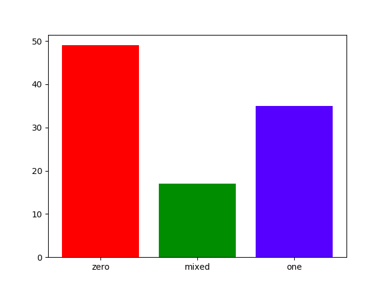
Figure 6: Figure 6: 100 trials sorted based on the distribution of views after 1000 iterations. Most networks polarized in favor of one seed or the other (zero or one respectively), but a few settled on a mixed equilibrium, where views in favor of both seeds and neutral views were present.
FUTURE WORK
This work is all very preliminary. We only tested a very small set of parameter values and network structures. Future work should be done to sweep a wide range of parameters and evaluate how they impact the results. Initialization may have an especially large impact on the outcome. There may be characteristic patterns that occur when networks are constructed in particular ways, such as using homophily, triadic closure, or preferential attachment.
We also made several assumptions in constructing the equation for how individuals update their views based on the news they receive. Perhaps most notably, we assumed that more neutral individuals care less about the schism and are therefore less likely to change their opinion, but it may be that instead more polarized individuals are less likely to change their views because they are more entrenched. It would be valuable to see how such different assumptions change the resulting equilibria.
REFERENCES
1. Zachary, Wayne W. "An Information Flow Model for Conflict and Fission in Small Groups." Journal of Anthropological Research 33.4 (1977): 452-473.
FIGURES OF NETWORKS
A. 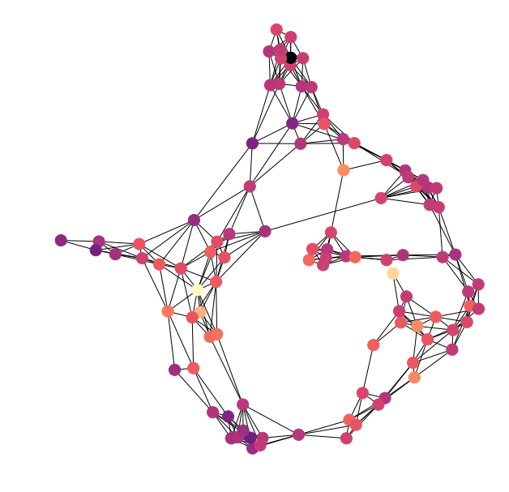 B.  C. 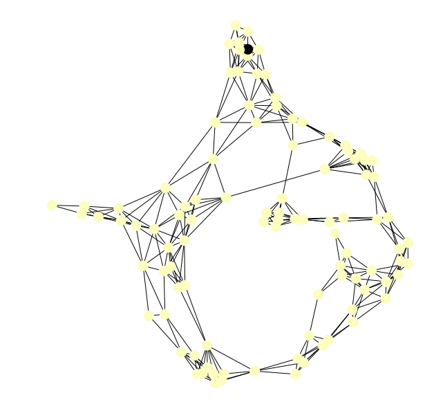
C. 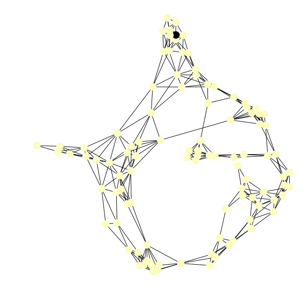
Figure 2: Simulation run on an example network. Nodes are colored by their view value. A. The initial state of the network. B. The network after a few iterations, showing that some people have drifted toward moderate viewpoints relative to their local neighbors. C. The network after over 1000 iterations. The views have polarized entirely toward Seed 1.
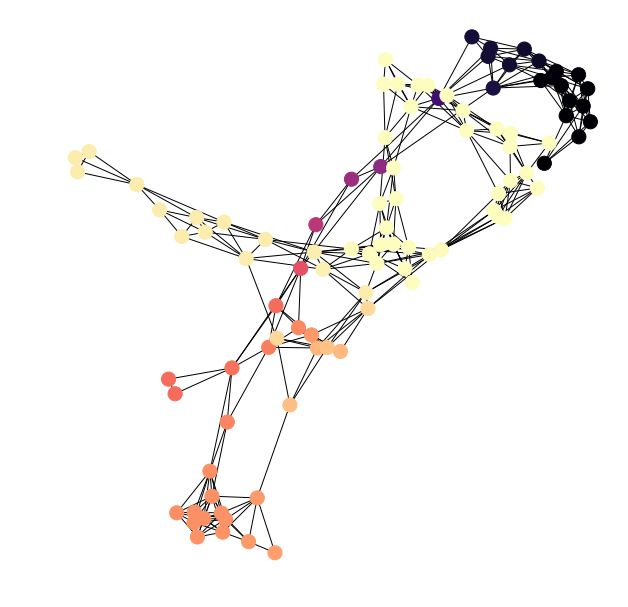
Figure 3: Example equilibrium state of a network with split groups. Network of agents colored by their view value after many iterations and showing no changes with more iterations (equilibrium). Darker colors correspond with views closer to 0, and lighter colors correspond with views closer to 1. Interestingly, unlike the final graph in Figure 2, multiple groups have formed, with some favoring Seed 0, others favoring Seed 1, and a third group of people with views in-between.

Figure 4: Example equilibrium state of the model run on a network generated with the Barabasi-Albert algorithm. Agents are colored by their view scores. The nodes on the left appear to have views closer to Seed 1, whereas the nodes on the right have views closer to center. A few nodes are black, indicating that their views are very near that of Seed 0.
A. 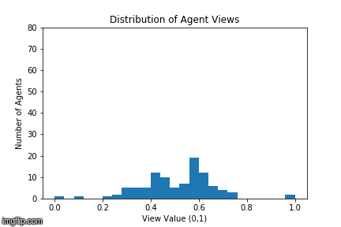
B. 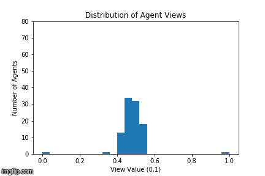
C. 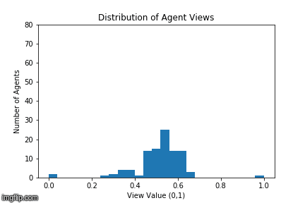
D. 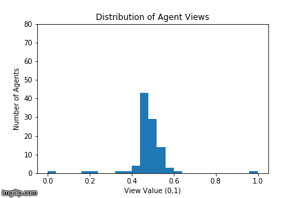
E. 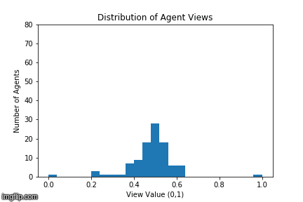
F. 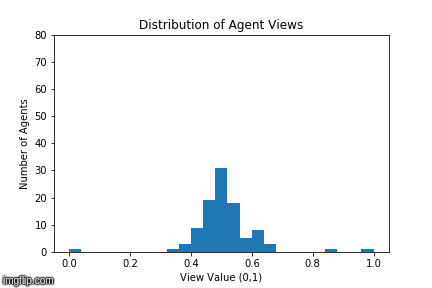
Figure 5:
A. Example where opinions first converge around 0.5, but eventually everyone polarizes toward 0. This is interesting because polarization does not occur smoothly. This is the most common kind of polarization we observed, either to 0 or 1.
B. This histogram shows the progression of the community's views over 1000 iterations. Nodes start from a random state. In this instance, most nodes are distributed around 0.5 and then start to migrate towards 1. The network ends up in a polarized state favoring seed 1.
C. This histogram shows the progression of the community's views over 1000 iterations. The nodes start from a random state. In this instance, the nodes split to favor either 0 or 1, though they stop near those extremes (0.1 and 0.9, respectively).
D. This histogram shows the progression of the community's views over 1000 iterations. The nodes start from a random state. In this instance, their views are split, where some nodes favor 0 or 1 and some nodes remain neutral, around 0.5.
E. This histogram shows the progression of the community's views over 1000 iterations. This shows a seemingly multi-modal distribution where one group is around 0.2, another group around 0.6, and a final group nearer 0.9.
F. This histogram shows the progression of the community's views over 1000 iterations. This shows how the nodes favor seed 1, but do not end up completely polarized. Instead, most of the nodes end up in the range of 0.6 to 1.0.